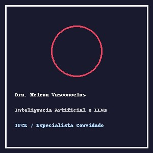
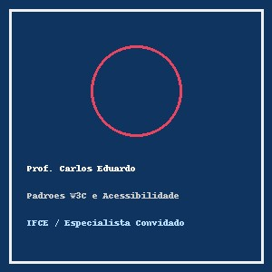
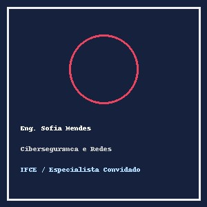
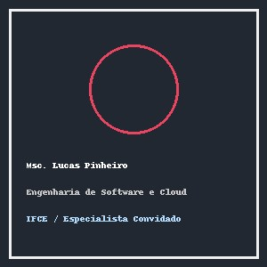

Conheça os pesquisadores, engenheiros e docentes que conduzirão as palestras magnas, mesas redondas, oficinas práticas e mentorias do Tech Challenge 2026™ no IFCE Campus Maracanaú.
1. Dra. Helena Vasconcelos
Palestrante Magna de Abertura • Pesquisadora Sênior em Inteligência Artificial

Figura 1: Dra. Helena Vasconcelos – Doutora em Ciência da Computação (UFC/Inria).
Minibiografia
A Dra. Helena Vasconcelos possui graduação e mestrado em Ciência da Computação pela Universidade Federal do Ceará (UFC) e doutorado sanduíche pelo Inria (França). Com mais de 15 anos de trajetória acadêmica e industrial, é referência nacional em modelos fundacionais de linguagem (LLMs), sistemas de recomendação e processamento de linguagem natural. Atua como consultora de inovação aberta e lidera iniciativas de inclusão científica de jovens pesquisadoras na área de computação.
Áreas de Atuação e Especialidades
Inteligência Artificial Generativa e Modelos de Linguagem (LLMs).
Processamento de Linguagem Natural e Recuperação Semântica da Informação.
Ética, Explicabilidade e Governança em Sistemas Algorítmicos.
Tópicos Abordados na Palestra Magna
Evolução histórica das arquiteturas de redes neurais profundas até os modelos de atenção e transformadores.
O papel da IA na automação de processos de engenharia de software e geração de interfaces.
Desafios éticos: viés cognitivo, privacidade de dados e conformidade regulatória.
Oportunidades de pesquisa e empreendedorismo em IA para estudantes dos cursos técnicos e superiores do IFCE.
Debatedor Principal da Mesa Redonda • Especialista em Padrões W3C e Acessibilidade Digital

Figura 2: Prof. Carlos Eduardo – Mestre em Engenharia de Software e Consultor de Acessibilidade Digital.
Minibiografia
Carlos Eduardo é docente, pesquisador e consultor independente com foco exclusivo em acessibilidade web, design universal e semântica de interfaces. Integra grupos de estudo vinculados ao consórcio W3C e possui ampla experiência na auditoria e adequação de sítios eletrônicos de órgãos públicos federais aos parâmetros do Modelo de Acessibilidade em Governo Eletrônico (e-MAG) e das diretrizes internacionais WCAG 2.2.
Áreas de Atuação e Especialidades
Padrões Web Abertos e Especificações HTML5 Semântico Puro.
Diretrizes de Acessibilidade para Conteúdo Web (WCAG 2.2 níveis A, AA e AAA).
Arquitetura da Informação e Usabilidade de Formulários Complexos.
Tópicos Abordados na Mesa Redonda
A importância primordial da semântica nativa para usuários de leitores de tela e tecnologias assistivas.
Como a dependência excessiva de scripts dinâmicos compromete a robustez e a universalidade da internet.
Estudos de caso reais de exclusão digital provocada por código mal estruturado.
Estratégias práticas para ensinar e aplicar acessibilidade desde os primeiros passos da formação em computação.
Instrutora da Oficina Prática • Especialista em Segurança Ofensiva e Redes Corporativas

Figura 3: Eng. Sofia Mendes – Especialista em Segurança Defensiva e Análise Forense Computacional.
Minibiografia
Formada em Engenharia de Telecomunicações pelo Instituto Federal com especialização em Redes de Computadores e Cibersegurança, Sofia Mendes atua como engenheira sênior de segurança defensiva (Blue Team) em empresas do setor financeiro. É certificada internacionalmente (OSCP, CEH e Security+) e atua voluntariamente na organização de maratonas no estilo Capture The Flag (CTF) pelo Nordeste.
Áreas de Atuação e Especialidades
Cibersegurança Defensiva, Hardening de Servidores e Monitoramento de Tráfego de Redes.
Análise Forense Digital e Resposta a Incidentes de Segurança.
Conscientização em Privacidade, Segurança de Dados e Conformidade com a LGPD.
Tópicos Abordados no Laboratório Prático
Identificação de vetores de ataque comuns em tráfego HTTP não criptografado e mecanismos de mitigação.
Utilização de ferramentas de código aberto para inspeção e auditoria de pacotes de dados.
Princípios de segurança em formulários web, validação rigorosa de entradas de dados e sanitização.
Organização e regras da competição CTF acadêmica do Tech Challenge 2026.
Mentor-Chefe do Hackathon • Arquiteto de Software e Engenheiro de Plataformas em Nuvem

Figura 4: Msc. Lucas Pinheiro – Mestre em Informática Aplicada e Consultor em Arquitetura Distribuída.
Minibiografia
Lucas Pinheiro é mestre em Informática Aplicada e atua há mais de uma década projetando sistemas de missão crítica, plataformas distribuídas e arquiteturas resilientes em nuvem. Possui ampla experiência no ecossistema de software livre e na mentoria de equipes universitárias em hackathons de âmbito nacional.
Áreas de Atuação e Especialidades
Arquitetura de Software Escalável e Microsserviços.
Computação em Nuvem e Infraestrutura Automatizada.
Desenvolvimento de Soluções Colaborativas com Software Livre e Open Source.
Tópicos Abordados no Hackathon e Mentoria
Definição de escopo mínimo viável (MVP) para projetos desenvolvidos em maratonas de 24 horas.
Modelagem de dados eficiente e padrões arquiteturais voltados à alta concorrência.
Critérios técnicos e pedagógicos de avaliação das equipes participantes do Tech Challenge.
Transição da ideia acadêmica para o ecossistema de inovação e prototipagem tecnológica.